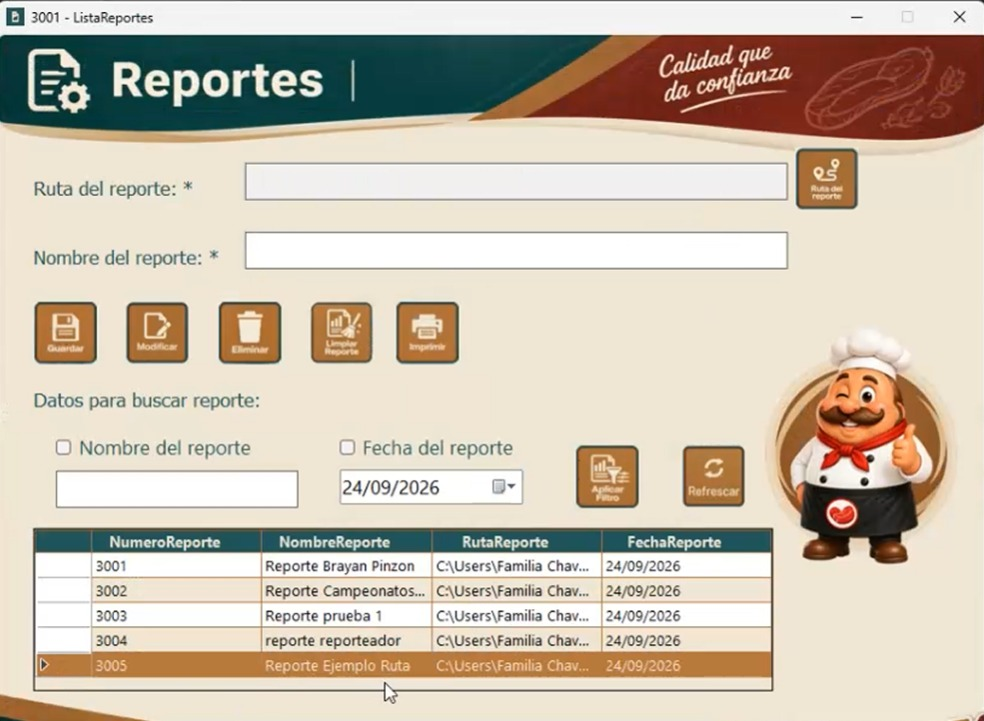

Guardar un reporte
Para registrar un nuevo reporte deben estar completos los campos Ruta del reporte y Nombre del reporte.

Al presionar Guardar, el sistema registra la información y muestra un mensaje indicando que la operación se realizó correctamente.